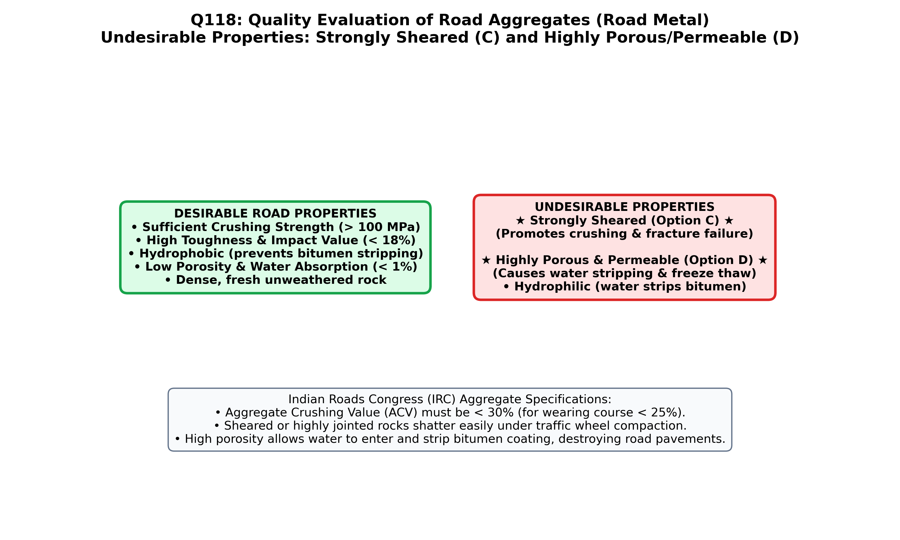

1. Theoretical Foundation: Desirable vs. Undesirable Properties of Road Metal
Road metal (crushed stone aggregate used in flexible bituminous and rigid concrete highway pavements) is subjected to intense wheel impact loads, mutual inter-particle abrasion, surface tire attrition, and moisture-induced stripping of bitumen. According to standard Indian engineering geology textbooks (e.g., K.M. Bangar and Parbin Singh) and Indian Roads Congress (IRC) specifications, road metal must be strong, tough, hard, hydrophobic (water-repelling, bitumen-loving), and non-porous/impermeable:
| Aggregate Property |
Physical & Engineering Meaning |
Impact on Highway Pavement Performance |
Desirable or Undesirable? |
| Should be Hydrophobic (Option A) |
Repels water and exhibits strong affinity (adhesion) for asphalt/bitumen binder (e.g., basalt, dolerite, limestone) |
Prevents moisture "stripping" of bitumen film from aggregate surfaces during monsoon rains |
HIGHLY DESIRABLE |
| Sufficient Crushing Strength (Option B) |
High UCS ($> 100\text{--}150\text{ MPa}$) and Aggregate Crushing Value ($\text{ACV} < 30\%$) |
Withstands heavy roller compaction and axle wheel loads without pulverizing |
HIGHLY DESIRABLE |
| STRONGLY SHEARED / HIGHLY POROUS & PERMEABLE (Options C & D) |
Option C: Tectonically sheared rock (flaky, pre-fractured, weak)
Option D: High porosity & permeability (absorbs water & wastes bitumen) |
Option C shatters into flaky splinters under rollers; Option D absorbs water, softens, and wastes expensive bitumen |
NOT DESIRABLE (CORRECT ANSWERS) |
"A good
road metal must possess: (1)
Sufficient crushing strength, hardness, and toughness to resist traffic impact and abrasion; (2)
Hydrophobic character (affinity for bitumen over water) so the bituminous binder does not strip off in wet weather; (3)
Low porosity and impermeability, because a
highly porous and permeable rock absorbs water and excessive bitumen and disintegrates under wheel loads; and (4) Sound, equidimensional cubical breakage, free from
strongly sheared, foliated, or flaky planes of weakness."
— K.M. Bangar, Principles of Engineering Geology (Standard Publishers, Chapter 14: Road Metals, pp. 299–300)
2. Hydrophobic vs. Hydrophilic Aggregates in Bituminous Roads
- Hydrophobic Rocks (Basic Rocks & Limestones): Basalt, dolerite (Deccan Trap), gabbro, and compact limestone carry positive surface charges that bond strongly with negatively charged naphthenic acids in bitumen. They repel water and resist binder stripping.
- Hydrophilic Rocks (Acidic Siliceous Rocks): Pure quartzite, sandstone, and granite have high free $\text{SiO}_2$ ($> 65\%$) carrying negative surface charges. They attract polar water molecules more strongly than bitumen, causing the bitumen film to peel off ("stripping") when submerged in rainwater unless anti-stripping amine additives are used.

Figure 118.1: Engineering comparison of road metal properties: Desirable qualities (hydrophobic bitumen adhesion and high crushing strength) vs. Undesirable defects (strongly sheared/flaky rock and highly porous/permeable rock).
Official OPSC 2019 Question & Forensic Option Analysis
Q118. Which of the following is not a desirable property for a road metal ?
(A) Should be hydrophobic
(B) Should have sufficient crushing strength
(C) Should be strongly sheared
(D) Should be highly porous and permeable
✔ Verified Correct Answer: Option (D) — Should be highly porous and permeable (and Option C — Should be strongly sheared)
Why this IS desirable: A road metal must be hydrophobic (water-repelling, like basalt and dolerite) so that it adheres tightly to bituminous/asphalt binders and resists stripping of the bitumen coating in the presence of rainwater.
Why this IS desirable: A road metal must possess high crushing strength (typically $> 1000\text{ kg/cm}^2$, Aggregate Crushing Value $< 30\%$) to withstand heavy steamrollers and commercial axle loads without crushing into powder.
Forensic Verification (Option C): A strongly sheared rock contains pervasive closely-spaced slickensides, micro-fractures, and foliation planes. When crushed for road aggregate, sheared rocks break into weak, flaky, and elongated splinters (high Flakiness Index) that snap immediately under traffic loads. Therefore, being strongly sheared is completely undesirable.
Forensic Verification (Option D): A road metal must never be highly porous and permeable (IRC limits water absorption to $\le 2\%$). Highly porous and permeable aggregates absorb rainwater (losing mechanical strength and causing freeze-thaw or pore-pressure failure) and soak up large quantities of expensive liquid bitumen into internal pores without contributing to inter-particle binding.
Synthesis: Standard Laboratory Tests for Road Metal Aggregates (IS: 2386)
| Laboratory Test |
Mechanical Property Measured |
Testing Apparatus |
IRC Limit for Bituminous Wearing Course |
| Aggregate Crushing Test | Resistance to gradual compressive crushing load | Compression machine ($40\text{ tonnes}$ in $10\text{ min}$) | $\text{ACV} \le 30\%$ |
| Aggregate Impact Test | Toughness (resistance to sudden shock/impact) | Impact hammer ($13.5\text{--}14\text{ kg}$, $38\text{ cm}$ drop, $15\text{ blows}$) | $\text{AIV} \le 30\%$ |
| Los Angeles Abrasion Test | Hardness & resistance to attrition/wear | Rotating steel drum with cast-iron spheres ($500\text{ rev}$) | $\text{LAAV} \le 30\%$ |
| Stripping Value Test | Hydrophobic adhesion to bitumen in water | Immersion of bitumen-coated aggregate at $40^\circ\text{C}$ for $24\text{ hr}$ | Stripping $\le 5\%$ |
| Water Absorption Test | Effective Porosity & Permeability | $24\text{ hr}$ immersion & oven drying | Absorption $\le 2.0\%$ |
High-Yield Practice Problems (8 Exam-Standard Questions)
1. Distinguish between "Hydrophobic" and "Hydrophilic" road aggregates with examples.
Answer: Hydrophobic aggregates (basalt, dolerite, limestone) have stronger affinity for bitumen than water; hydrophilic aggregates (quartzite, granite, sandstone) attract water over bitumen, causing binder stripping.
Basic igneous rocks and carbonate rocks are naturally hydrophobic and superior for bituminous pavements.
2. Which rock type in India is considered the single best all-round road metal and why?
Answer: Basalt and Dolerite ("Deccan Trap") because they are fine-grained, tough, hard, non-porous, break into angular cubical fragments, and are strongly hydrophobic.
Fine-grained basic igneous rocks combine high toughness (low AIV) with excellent bitumen adhesion.
3. What is the difference between "Attrition" and "Abrasion" in road aggregates?
Answer: Attrition is the mutual rubbing of aggregate stones against each other under traffic vibration (tested by Deval Attrition Test); abrasion is wear caused by external vehicle tires (tested by Dorry/Los Angeles Test).
The Los Angeles test measures combined abrasion, attrition, and impact.
4. Why are flaky and elongated aggregate particles (formed from sheared or schistose rocks) rejected in road construction?
Answer: They orient horizontally during rolling and fracture easily across their thin dimension under traffic wheel loads, reducing pavement stability and interlock.
A particle is flaky if its least dimension is less than $0.6\times$ its mean dimension; elongated if its greatest dimension exceeds $1.8\times$ its mean dimension.
5. Why is highly porous rock doubly disadvantageous in bituminous road construction?
Answer: (1) It has low mechanical crushing/impact strength, and (2) its open pores absorb large quantities of expensive bitumen that does not contribute to surface bonding.
Additionally, absorbed water causes freeze-thaw disintegration and hydraulic pore-pressure stripping under fast wheel loads.
6. What is the ideal particle shape for road metal aggregates?
Answer: Angular and approximately equidimensional (cubical / tetrahedral) with rough micro-texture.
Angular cubical fragments provide maximum mechanical interlocking (high angle of internal friction $\phi$) and high surface area for binder adhesion.
7. Why are rounded river gravels unsuitable for the wearing course of heavy-duty roads unless crushed?
Answer: Smooth, rounded pebbles lack angular edges for mechanical interlocking and slip past one another under horizontal wheel braking forces.
Crushing river boulders creates fresh, rough, angular fracture faces required for stability.
8. What is the "Polished Stone Value" (PSV) of a road aggregate and why is pure limestone avoided in the top skid-resistant surface of expressways?
Answer: PSV measures resistance of aggregate to polishing under rubber tires; pure monomineralic limestone ($H=3$) polishes smooth quickly, reducing wet skid resistance.
Rocks composed of minerals with contrasting hardness (e.g., dolerite or gritstone) maintain micro-roughness and high PSV as they wear differentially.